واجهة رئيسية لتلفزيونات وبوكسات أندرويد: تطبيقاتك بشكل مرتب وجميل، مشغّل IPTV ومشغّل فيديو ذكي، مدير ملفات يرسل ويستقبل، ومثبّت تطبيقات بكود Downloader.
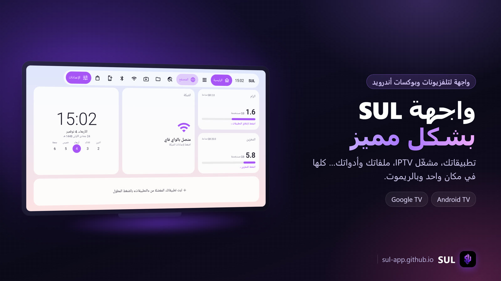
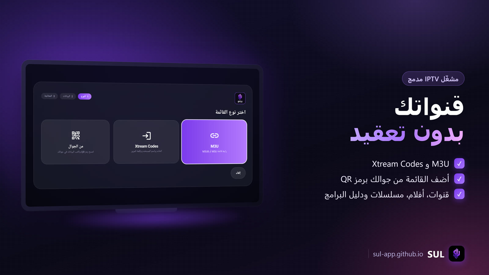
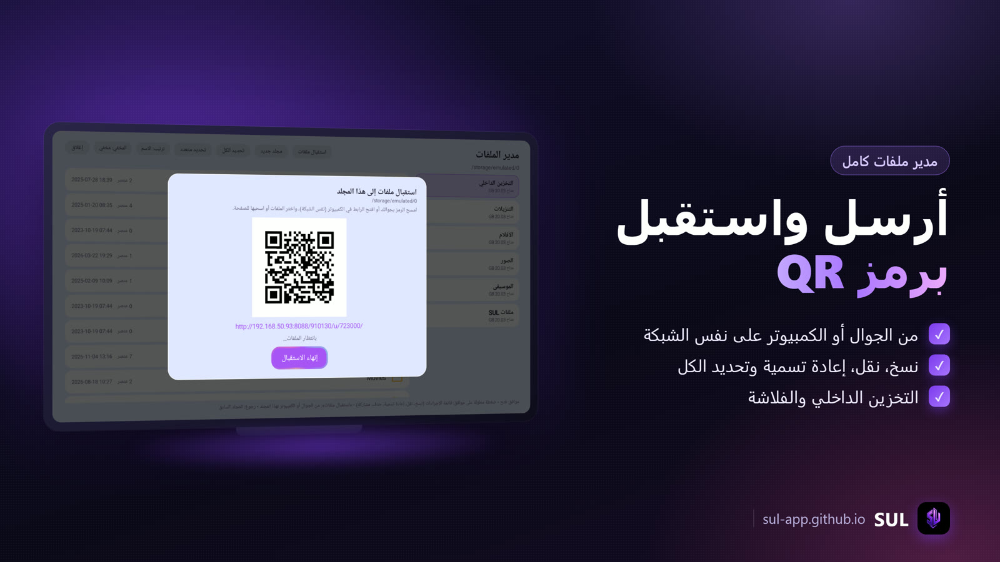
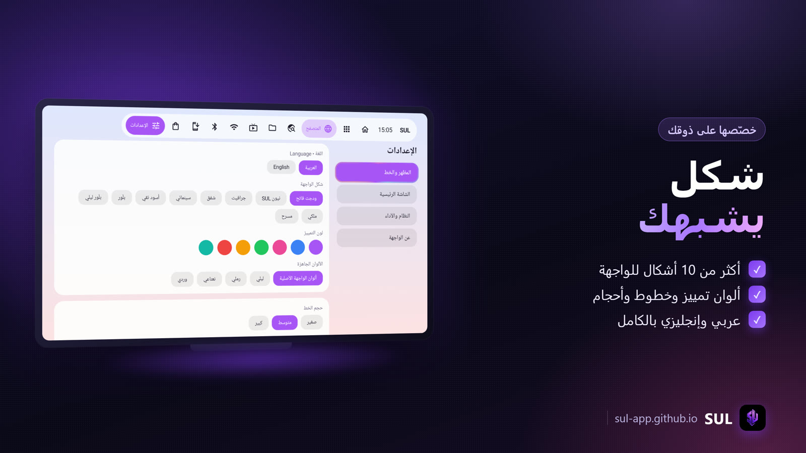
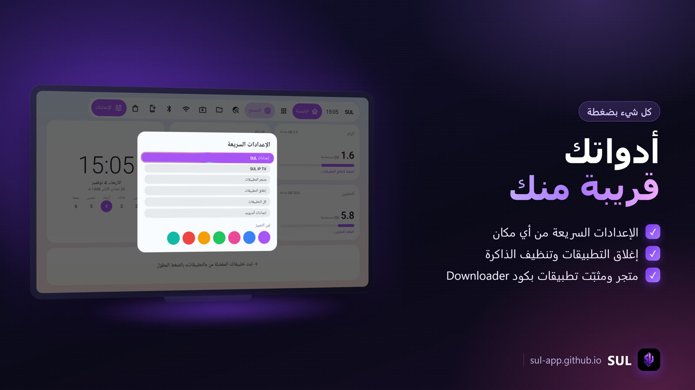
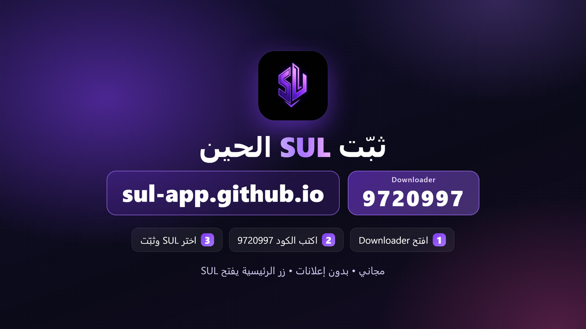
وش يسوي SUL
واجهة رئيسية
تطبيقاتك ومفضلتك بـ10 تصاميم للواجهة، ثيمات وخطوط، ساعة وطقس ومعلومات الجهاز، وشاشة توقف بصورة وأيقونة متحركة.
مشغّل IPTV
أضف قائمة M3U أو بيانات Xtream Codes: قنوات مباشرة، أفلام ومسلسلات، دليل البرامج، المفضلة، وتقليب القنوات بالأسهم. SUL مشغّل فقط ولا يوفّر أي محتوى.
مشغّل ذكي
يشغّل الروابط والملفات من أي تطبيق، يختار الجودة والصوت والترجمة، يدعم HDR، ويعرض معلومات الاتصال ويحاول يصلح البث لو علق.
مدير ملفات
ملفات الجهاز والفلاشة: فتح، نسخ، نقل، إعادة تسمية، حذف، تحديد الكل. يرسل الملفات لجوالك أو الكمبيوتر برمز QR، ويستقبل منها على نفس الشبكة.
مثبّت التطبيقات
اكتب كود Downloader أو رابط صفحة ويجيب لك ملف APK ويثبّته، مع متجر صغير للتطبيقات المعروفة.
زر الرئيسية
حتى لو جهازك ما يسمح بتغيير الواجهة الافتراضية، SUL يقدر ينفتح من زر الرئيسية بخدمة إمكانية الوصول، ويقدر ينفتح أول ما يشتغل الجهاز.
أدوات النظام
تنظيف الذاكرة والكاش، إغلاق التطبيقات، المساحة، والإعدادات السريعة من مكان واحد، بصلاحيات SUL المدمجة.
عربي وإنجليزي
الواجهة كاملة بالعربي أو الإنجليزي، والاتجاه يتغير معها.
تنزيل SUL
اختر الملف بالريموت واضغط موافق، وبعد ما يخلص التنزيل اضغط «تثبيت».
1طريقة تثبيت SUL
- اسمح بالتثبيت: الإعدادات ← التطبيقات ← الأمان والقيود ← مصادر غير معروفة ← فعّل Downloader.
- أوقف حماية Google Play مؤقتاً: SUL فيه أدوات ADB، فحماية Google Play ممكن ترفض تثبيته. افتح متجر Google Play ← صورة حسابك ← Play Protect ← الإعدادات ⚙ ← أطفِ «فحص التطبيقات باستخدام Play Protect».
- نزّل SUL: اختر «SUL» من التنزيل فوق ثم «تثبيت».
- رجّع حماية Google Play: بعد التثبيت ارجع لنفس المكان وفعّلها.
- خلّ SUL الواجهة الرئيسية: انتقل لإعدادات SUL ← «النظام والأداء»، فعّل «اتصال» ووافق على «السماح بتصحيح الأخطاء»، بعدين «خلّ SUL الواجهة الرئيسية».
- لو ما ضبطت: في نفس الصفحة «فتح إعدادات إمكانية الوصول» وفعّل «SUL — زر الرئيسية».
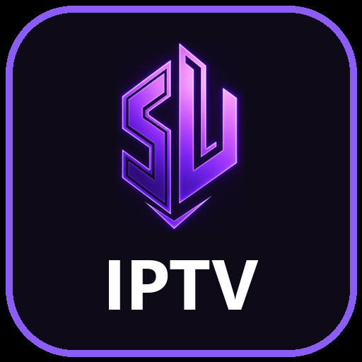
مشغّل IPTV مستقل • ما يحتاج SUL
تطبيق مستقل لمشغّل IPTV حق SUL: تثبّته لحاله على الجوال أو التلفزيون أو البوكس، وما يحتاج تثبيت SUL. أضف قائمتك وشغّل قنواتك وأفلامك ومسلسلاتك. SUL IPTV مشغّل فقط ولا يوفّر أي قنوات أو محتوى.
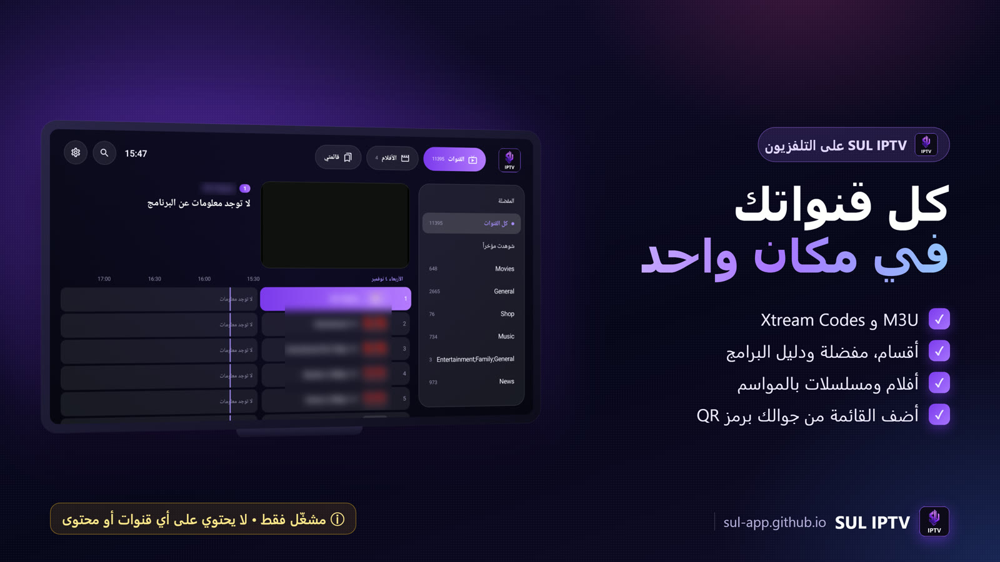
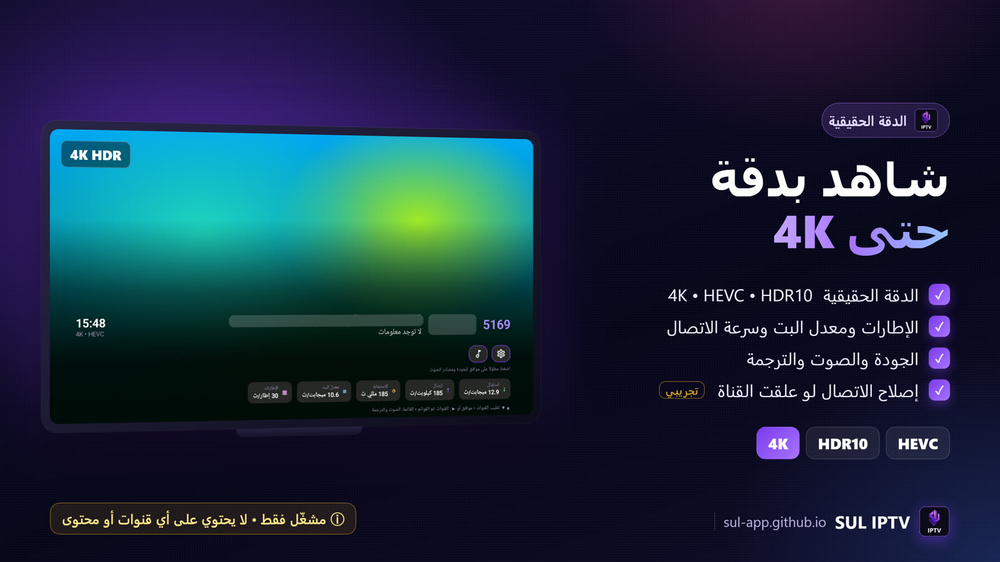
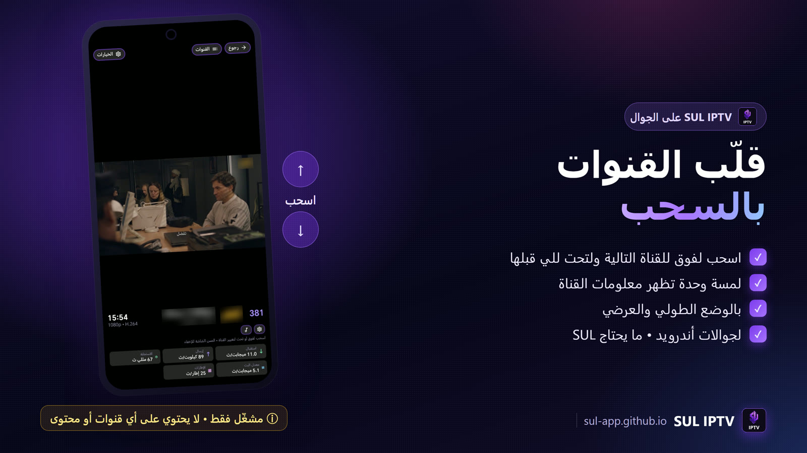
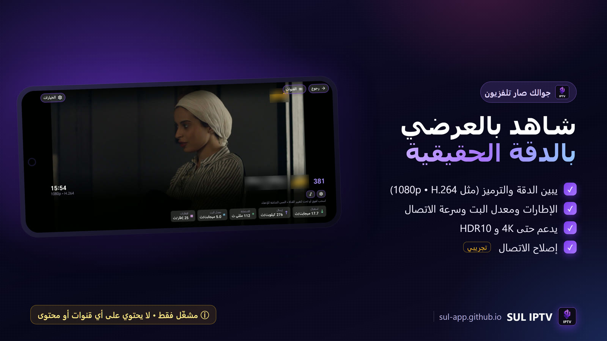
وش يسوي SUL IPTV
قوائمك كلها
رابط M3U أو بيانات Xtream Codes، وأكثر من قائمة مع التبديل بينها. على التلفزيون تقدر تضيف القائمة من جوالك برمز QR بدل الكتابة بالريموت.
قنوات وأفلام ومسلسلات
القنوات المباشرة بأقسامها، والأفلام والمسلسلات بالمواسم والحلقات، والمفضلة و«شوهدت مؤخراً»، والبحث.
دليل البرامج
البرنامج الحالي والتالي لكل قناة، وجدول البرامج على التلفزيون، ورابط EPG مخصص لو تبي.
تقليب القنوات بالسحب
وأنت تشاهد: اسحب لفوق للقناة التالية ولتحت للي قبلها، ولمسة وحدة تظهر معلومات القناة. وعلى التلفزيون بالأسهم.
مناسب لجوالات أندرويد
يشتغل بالوضع الطولي والعرضي ويتعدّل على مقاس الشاشة، والمشاهدة تكمل لما تدير الجوال. أزرار رجوع وقائمة القنوات والخيارات فوق، والجودة والصوت تطلع من تحت.
الدقة الحقيقية حتى 4K
يبين لك دقة البث الحقيقية والترميز ونوع HDR (مثل 4K • HEVC • HDR10) وعدد الإطارات في الثانية ومعدل البت، مو بس اسم القناة. يدعم حتى 4K و HDR10 و HLG.
الجودة والصوت والترجمة
اختر جودة البث من الجودات المتوفرة، ومسار الصوت، والترجمة، ونسبة العرض.
معلومات الاتصال
سرعة الاستقبال والإرسال وزمن الاستجابة ومعدل البت والإطارات وقت المشاهدة، وتنبيه لو الاتصال ما يكفي.
إصلاح الاتصال (تجريبي)
لو علقت القناة يحاول يصلحها تلقائياً بخطوات: تغيير DNS، وتنشيط الاتصال، وإعادة الاتصال بجودة مرنة. الميزة تجريبية وتقدر تطفيها من الإعدادات.
قفل وترتيب
اقفل أي قسم برمز سري، ورتّب القنوات والأقسام على ذوقك.
عربي وإنجليزي
الواجهة كاملة بالعربي أو الإنجليزي، وتشتغل بالريموت وباللمس.
تنزيل SUL IPTV
1طريقة تثبيت SUL IPTV
- على الجوال: افتح
sul-app.github.ioمن المتصفح ونزّل «SUL IPTV»، وافتح الملف واضغط «تثبيت» (لو طلب، اسمح للمتصفح بتثبيت التطبيقات). - على التلفزيون أو البوكس: من Downloader افتح هذي الصفحة واختر «SUL IPTV» ثم «تثبيت».
- أضف قائمتك: افتح SUL IPTV ← «إضافة قائمة» ← M3U أو Xtream Codes، واكتب بيانات مزوّدك.
أسئلة
يشتغل على أي جهاز؟
تلفزيونات وبوكسات أندرويد TV و Google TV (أندرويد 8 وأحدث). جرّبناه على TCL و Skyworth و NVIDIA Shield و Chromecast مع Google TV.
أحتاج برامج ثانية؟
لا. SUL يسوي كل شيء لحاله، بس فعّل «تصحيح أخطاء USB» مرة وحدة.
أحتاج كمبيوتر؟
لا، كل شيء من التلفزيون نفسه.
كيف أرجع لواجهة النظام؟
SUL ← الإعدادات ← «النظام والأداء» ← «رجوع لواجهة النظام».
هل SUL يجمع بياناتي؟
لا. خدمة زر الرئيسية ما تقرأ محتوى الشاشة، بس تعرف متى تنفتح واجهة النظام عشان تفتح SUL بدالها.